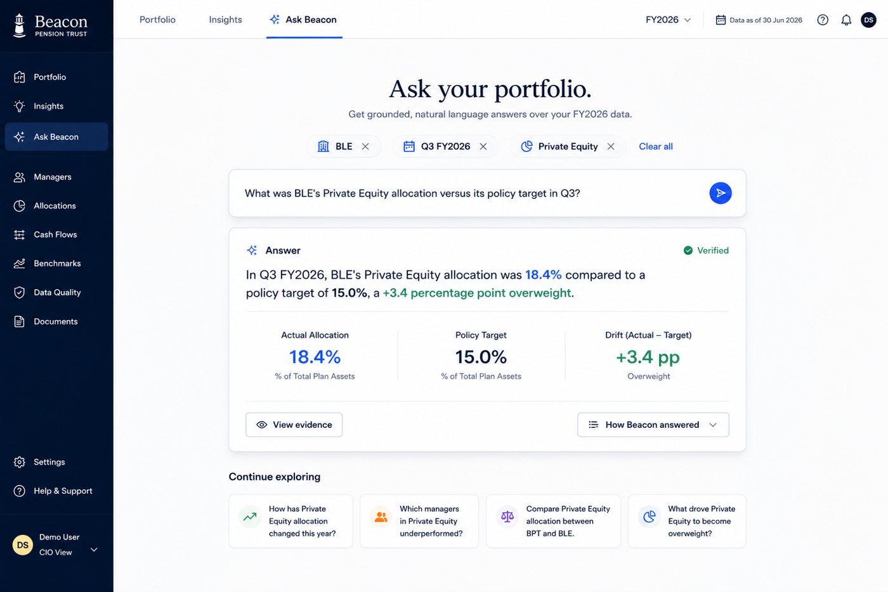
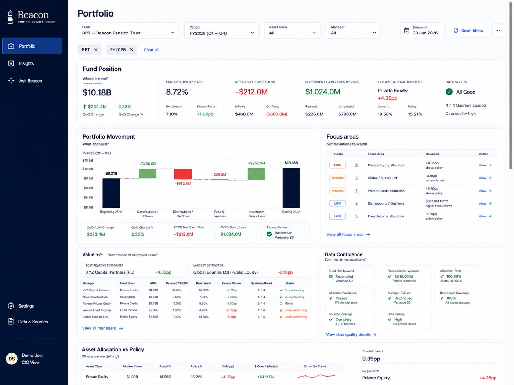
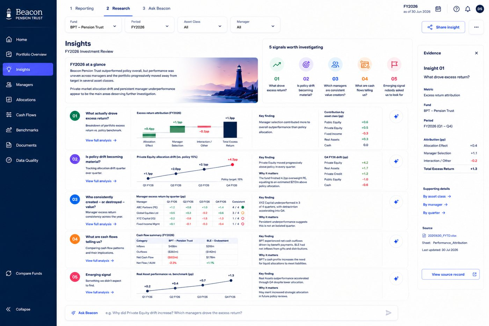

Independent AI & Analytics
Beacon Intelligence
AI-powered portfolio intelligence dashboard and decision-support application.
The challenge
Investment users need dependable answers across funds, periods, benchmarks, allocation, manager performance and cash flows. A free-text AI answer alone is not suitable for calculations that require numerical consistency and traceable source evidence.
Objective
Demonstrate how institutional investment teams could interrogate portfolio performance, identify issues worth investigating and retrieve evidence without manually reconciling disconnected reporting views.
Approach
Built a problem-first investment intelligence prototype with Portfolio, Insights and Ask Beacon experiences. Ingested and normalised supplied workbooks into a shared Python/DuckDB analytical layer, added provenance to original data where available, and iterated from a more LLM-led design toward AI tool selection backed by deterministic calculations and structured UI responses.
Outcomes
Delivered a working prototype with portfolio drill-down, research-oriented insights and natural-language access to validated analytical results. The architecture keeps AI orchestration separate from financial calculations, so every answer is traceable to its source.


